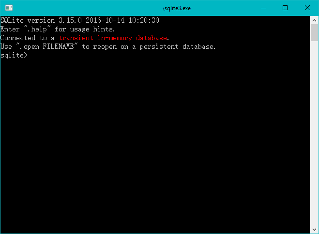
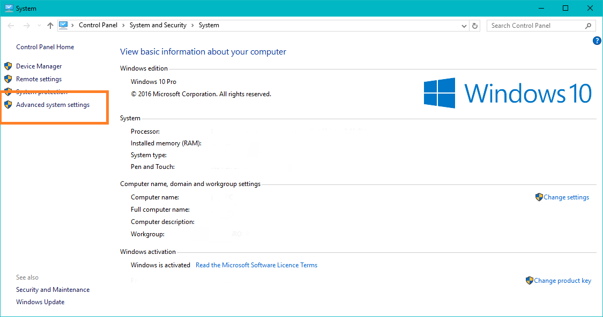
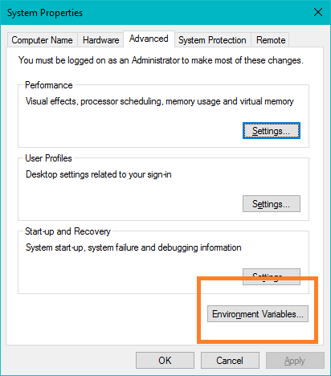
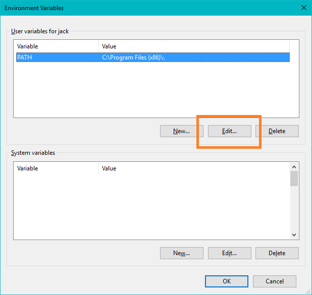
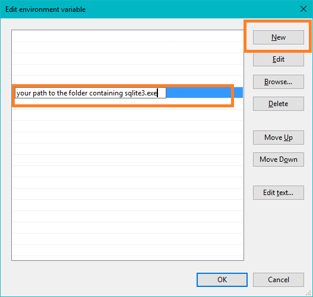

Installing Sqlite3 on Windows
- Go to https://sqlite.org/download.html
- Download 'sqlite-tools-win32-x86-3150000.zip' under 'Precompiled Binaries for Windows' section
- Extract sqlite3.exe from zip
- One easiest way to test/run it is by double clicking sqlite3.exe
You would see something like this

- Follow instructions on https://sqlite.org/cli.html to play around with it.
Running from cmd
If you want to run it by typing sqlite3 from cmd, you have to add the folder you extract sqlite.exe to you system PATH variable.
On Windows 10 (similar on Windows 7/8), this can be done by
- right clicking your computer icon, select properties
- Abvanced system settings

- Under tag 'Advanced', click Environment Variables...

- select PATH variable and click Edit

- New...
- Copy/Type the path to your folder that holds the sqlite3.exe file

- Click Ok, Ok...
Then you should be able to run it through cmd, enjoy